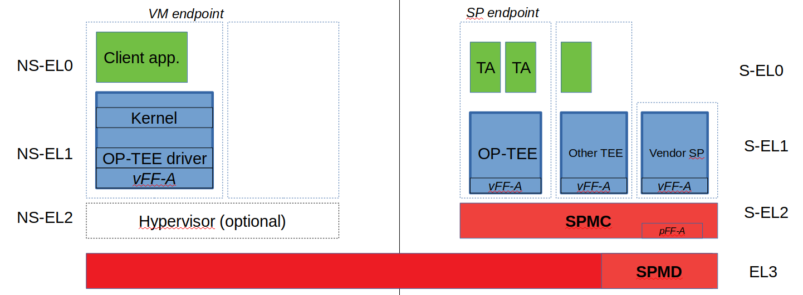

12. Secure Partition Manager¶
Contents
12.1. Acronyms¶
DTB |
Device Tree Blob |
DTS |
Device Tree Source |
EC |
Execution Context |
FIP |
Firmware Image Package |
FF-A |
Firmware Framework for A-class |
IPA |
Intermediate Physical Address |
NWd |
Normal World |
ODM |
Original Design Manufacturer |
OEM |
Original Equipment Manufacturer |
PA |
Physical Address |
PE |
Processing Element |
PVM |
Primary VM |
PSA |
Platform Security Architecture |
SP |
Secure Partition |
SPM |
Secure Partition Manager |
SPMC |
SPM Core |
SPMD |
SPM Dispatcher |
SiP |
Silicon Provider |
SWd |
Secure World |
TLV |
Tag-Length-Value |
TOS |
Trusted Operating System |
VM |
Virtual Machine |
12.2. Foreword¶
Two implementations of a Secure Partition Manager co-exist in the TF-A codebase:
SPM based on the PSA FF-A specification [1].
SPM based on the MM interface to communicate with an S-EL0 partition [2].
Both implementations differ in their architectures and only one can be selected at build time.
This document:
describes the PSA FF-A implementation where the Secure Partition Manager resides at EL3 and S-EL2 (or EL3 and S-EL1).
is not an architecture specification and it might provide assumptions on sections mandated as implementation-defined in the specification.
covers the implications to TF-A used as a bootloader, and Hafnium used as a reference code base for an S-EL2 secure firmware on platforms implementing Armv8.4-SecEL2.
12.2.1. Terminology¶
Hypervisor refers to the NS-EL2 component managing Virtual Machines (or partitions) in the Normal World.
SPMC refers to the S-EL2 component managing Virtual Machines (or Secure Partitions) in the Secure World when Armv8.4-SecEL2 extension is implemented.
Alternatively, SPMC can refer to an S-EL1 component, itself being a Secure Partition and implementing the FF-A ABI on pre-Armv8.4 platforms.
VM refers to a Normal World Virtual Machine managed by an Hypervisor.
SP refers to a Secure World “Virtual Machine” managed by the SPMC component.
12.2.2. Support for legacy platforms¶
In the implementation, the SPM is split into SPMD and SPMC components (although not strictly mandated by the specification). SPMD is located at EL3 and principally relays FF-A messages from NWd (Hypervisor or OS kernel) to SPMC located either at S-EL1 or S-EL2.
Hence TF-A must support both cases where SPMC is either located at:
S-EL1 supporting pre-Armv8.4 platforms. SPMD conveys FF-A protocol from EL3 to S-EL1.
S-EL2 supporting platforms implementing Armv8.4-SecEL2 extension. SPMD conveys FF-A protocol from EL3 to S-EL2.
The same SPMD component is used to support both configurations. The SPMC execution level is a build time choice.
12.3. Sample reference stack¶
The following diagram illustrates a possible configuration with SPMD and SPMC, one or multiple Secure Partitions, with or without an optional Hypervisor:
12.4. TF-A build options¶
The following TF-A build options are provisioned:
SPD=spmd: this option selects the SPMD component to relay FF-A protocol from NWd to SWd back and forth. It is not possible to enable another Secure Payload Dispatcher when this option is chosen.
SPMD_SPM_AT_SEL2: this option adjusts the SPMC execution level to being S-EL1 or S-EL2. It defaults to enabled (value 1) when SPD=spmd is chosen.
CTX_INCLUDE_EL2_REGS: this option permits saving (resp. restoring) the EL2 system register context before entering (resp. after leaving) the SPMC. It is mandatory when
SPMD_SPM_AT_SEL2is enabled. The context save/restore routine and exhaustive list of registers is visible at [4].SP_LAYOUT_FILE: this option provides a text description file providing paths to SP binary images and DTS format manifests (see Specifying partition binary image and DT). It is required when
SPMD_SPM_AT_SEL2is enabled hence when multiple secure partitions are to be loaded on behalf of SPMC.
CTX_INCLUDE_EL2_REGS |
SPMD_SPM_AT_SEL2 |
|
SPMC at S-EL1 (e.g. OP-TEE) |
0 |
0 |
SPMC at S-EL2 (e.g. Hafnium) |
1 |
|
Other combinations of such build options either break the build or are not supported.
Note, the CTX_INCLUDE_EL2_REGS option provides the generic support for
barely saving/restoring EL2 registers from an Arm arch perspective. As such
it is decoupled from the SPD=spmd option.
BL32 option is re-purposed to specify the SPMC image. It can specify either the Hafnium binary path (built for the secure world) or the path to a TEE binary implementing the FF-A protocol.
BL33 option can specify either:
the TFTF binary or
the Hafnium binary path (built for the normal world) if VMs were loaded by TF-A beforehand or
a minimal loader performing the loading of VMs and Hafnium.
Sample TF-A build command line when SPMC is located at S-EL1 (typically pre-Armv8.4):
make \
CROSS_COMPILE=aarch64-none-elf- \
SPD=spmd \
SPMD_SPM_AT_SEL2=0 \
BL32=<path-to-tee-binary> \
BL33=<path-to-nwd-binary> \
PLAT=fvp \
all fip
Sample TF-A build command line for an Armv8.4-SecEL2 enabled system where SPMC is located at S-EL2:
make \
CROSS_COMPILE=aarch64-none-elf- \
SPD=spmd \
CTX_INCLUDE_EL2_REGS=1 \
ARM_ARCH_MINOR=4 \
BL32=<path-to-swd-hafnium-binary>
BL33=<path-to-nwd-binary> \
SP_LAYOUT_FILE=sp_layout.json \
PLAT=fvp \
all fip
Build options to enable secure boot:
make \
CROSS_COMPILE=aarch64-none-elf- \
SPD=spmd \
CTX_INCLUDE_EL2_REGS=1 \
ARM_ARCH_MINOR=4 \
BL32=<path-to-swd-hafnium-binary>
BL33=<path-to-nwd-binary> \
SP_LAYOUT_FILE=../tf-a-tests/build/fvp/debug/sp_layout.json \
MBEDTLS_DIR=<path-to-mbedtls-lib> \
TRUSTED_BOARD_BOOT=1 \
COT=dualroot \
ARM_ROTPK_LOCATION=devel_rsa \
ROT_KEY=plat/arm/board/common/rotpk/arm_rotprivk_rsa.pem \
GENERATE_COT=1 \
PLAT=fvp \
all fip
12.5. Boot process¶
12.5.1. Loading Hafnium and Secure Partitions in the secure world¶
The Hafnium implementation in normal world requires VMs to be loaded in memory prior to booting. The mechanism upon which VMs are loaded and exposed to Hafnium are either:
by supplying a ramdisk image where VM images are concatenated (1)
or by providing VM load addresses within Hafnium manifest (2)
TF-A is the bootlader for the Hafnium and SPs in the secure world. TF-A does not provide tooling or libraries manipulating ramdisks as required by (1). Thus BL2 loads SPs payloads independently. SPs may be signed by different parties (SiP, OEM/ODM, TOS vendor, etc.). Thus they are supplied as distinct “self-contained” signed entities within the FIP flash image. The FIP image itself is not signed hence providing ability to upgrade SPs in the field.
12.5.2. Booting through TF-A¶
12.5.2.1. SP manifests¶
An SP manifest describes SP attributes as defined in [1] section 3.1 (partition manifest at virtual FF-A instance) in DTS text format. It is represented as a single file associated with the SP. A sample is provided by [5]. A binding document is provided by [6].
12.5.2.2. Secure Partition packages¶
Secure Partitions are bundled as independent package files consisting of:
a header
a DTB
an image payload
The header starts with a magic value and offset values to SP DTB and image payload. Each SP package is loaded independently by BL2 loader and verified for authenticity and integrity.
The SP package identified by its UUID (matching FF-A uuid) is inserted as a single entry into the FIP at end of the TF-A build flow as shown:
Trusted Boot Firmware BL2: offset=0x1F0, size=0x8AE1, cmdline="--tb-fw"
EL3 Runtime Firmware BL31: offset=0x8CD1, size=0x13000, cmdline="--soc-fw"
Secure Payload BL32 (Trusted OS): offset=0x1BCD1, size=0x15270, cmdline="--tos-fw"
Non-Trusted Firmware BL33: offset=0x30F41, size=0x92E0, cmdline="--nt-fw"
HW_CONFIG: offset=0x3A221, size=0x2348, cmdline="--hw-config"
TB_FW_CONFIG: offset=0x3C569, size=0x37A, cmdline="--tb-fw-config"
SOC_FW_CONFIG: offset=0x3C8E3, size=0x48, cmdline="--soc-fw-config"
TOS_FW_CONFIG: offset=0x3C92B, size=0x427, cmdline="--tos-fw-config"
NT_FW_CONFIG: offset=0x3CD52, size=0x48, cmdline="--nt-fw-config"
B4B5671E-4A90-4FE1-B81F-FB13DAE1DACB: offset=0x3CD9A, size=0xC168, cmdline="--blob"
D1582309-F023-47B9-827C-4464F5578FC8: offset=0x48F02, size=0xC168, cmdline="--blob"
![/'
' Copyright (c) 2020, ARM Limited and Contributors. All rights reserved.
'
' SPDX-License-Identifier: BSD-3-Clause
'/
@startuml
folder SP_vendor_1 {
artifact sp_binary_1
artifact sp_manifest_1 [
sp_manifest_1
===
UUID = xxx
load_address = 0xaaa
owner = "Sip"
...
]
}
folder SP_vendor_2 {
artifact sp_binary_2
artifact sp_manifest_2 [
sp_manifest_2
===
UUID = yyy
load_address = 0xbbb
owner = "Plat"
]
}
artifact tb_fw_config.dts [
tb_fw_config.dts
----
secure-partitions
===
spkg_1 UUID
spkg_1 load_address
---
spkg_2 UUID
spkg_2 load_address
---
...
===
...<rest of the nodes>
]
artifact config.json [
SP_LAYOUT.json
===
path to sp_binary_1
path to sp_manifest_1
---
path to sp_binary_2
path to sp_manifest_2
---
...
]
control sp_mk_generator
artifact sp_gen [
sp_gen.mk
===
FDT_SOURCE = ...
SPTOOL_ARGS = ...
FIP_ARGS = ...
CRT_ARGS = ...
]
control dtc
control sptool
artifact tb_fw_config.dtb
artifact spkg_1 [
sp1.pkg
===
<i>header</i>
---
manifest
---
binary
]
artifact spkg_2 [
sp2.pkg
===
<i>header</i>
---
manifest
---
binary
]
artifact signed_tb_fw_config.dtb [
tb_fw_config.dtb (signed)
]
artifact signed_spkg_1 [
sp1.pkg (signed)
===
<i>header</i>
---
manifest
---
binary
---
<i>signature</I>
]
artifact signed_spkg_2 [
sp2.pkg (signed)
===
<i>header</i>
---
manifest
---
binary
---
<i>signature</I>
]
control crttool
control fiptool
artifact fip [
fip.bin
===
tb_fw_config.dtb (signed)
---
...
---
sp1.pkg (signed & SiP owned)
---
sp2.pkg (signed & Platform owned)
---
...
]
config.json .up.> SP_vendor_1
config.json .up.> SP_vendor_2
config.json --> sp_mk_generator
sp_mk_generator --> sp_gen
sp_gen --> fiptool
sp_gen --> cert_create
sp_gen --> sptool
sptool --> spkg_1
sptool --> spkg_2
spkg_1 --> cert_create
spkg_2 --> cert_create
cert_create --> signed_spkg_1
cert_create --> signed_spkg_2
tb_fw_config.dts --> dtc
dtc --> tb_fw_config.dtb
tb_fw_config.dtb --> cert_create
cert_create --> signed_tb_fw_config.dtb
signed_tb_fw_config.dtb --> fiptool
signed_spkg_1 -down-> fiptool
signed_spkg_2 -down-> fiptool
fiptool -down-> fip
@enduml](../_images/plantuml-5cb20313c4ce8ea57c37c1904770314f270f40ba.svg)
12.5.2.3. Specifying partition binary image and DT¶
A description file (json format) is passed to the build flow specifying paths to the SP binary image and associated DTS partition manifest file. The latter is going through the dtc compiler to generate the dtb fed into the SP package. This file also specifies the owner of the SP, which is an optional field and identifies the signing domain in case of dualroot CoT. The possible owner of an SP could either be Silicon Provider or Platform, and the corresponding “owner” field value could either be “SiP” or “Plat”. In absence of “owner” field, it defaults to “SiP”.
{
"tee1" : {
"image": "tee1.bin",
"pm": "tee1.dts",
"owner": "SiP"
},
"tee2" : {
"image": "tee2.bin",
"pm": "tee2.dts",
"owner": "Plat"
}
}
12.5.2.4. SPMC manifest¶
This manifest contains an SPMC attributes node consumed by SPMD at boot time. It is implementing the description from [1] section 3.2 (SP manifest at physical FF-A instance). The SP manifest at physical FF-A instance is used by the SPMD to setup a SP that co-resides with the SPMC and executes at S-EL1 or Secure Supervisor mode.
In this implementation its usage is extended to the secure physical FF-A instance where SPMC executes at S-EL2.
attribute {
spmc_id = <0x8000>;
maj_ver = <0x1>;
min_ver = <0x0>;
exec_state = <0x0>;
load_address = <0x0 0x6000000>;
entrypoint = <0x0 0x6000000>;
binary_size = <0x60000>;
};
spmc_id defines the endpoint ID value that SPMC can query through
FFA_ID_GET.maj_ver/min_ver. SPMD checks provided version versus its internal version and aborts if not matching.
exec_state defines SPMC execution state (can be AArch64 for Hafnium, or AArch64/AArch32 for OP-TEE at S-EL1).
load_address and binary_size are mostly used to verify secondary entry points fit into the loaded binary image.
entrypoint defines the cold boot primary core entry point used by SPMD (currently matches
BL32_BASE)
Other nodes in the manifest are consumed by Hafnium in the secure world. A sample can be found at [7]:
The chosen node is currently unused in SWd. It is meant for NWd to specify the init ramdisk image.
The hypervisor node describes SPs. is_ffa_partition boolean attribute indicates an SP. Load-addr field specifies the load address at which TF-A loaded the SP package.
cpus node provide the platform topology and allows MPIDR to VMPIDR mapping. Notice with current implementation primary cpu is declared first, then secondary cpus must be declared in reverse order.
12.5.2.5. SPMC boot¶
The SPMC is loaded by BL2 as the BL32 image.
The SPMC manifest is loaded by BL2 as the TOS_FW_CONFIG image.
BL2 passes the SPMC manifest address to BL31 through a register.
BL31(SPMD) runs from primary core, initializes the core contexts and launches BL32 passing the SPMC manifest address through a register.
12.5.2.6. Loading of SPs¶
![/'
' Copyright (c) 2020, ARM Limited and Contributors. All rights reserved.
'
' SPDX-License-Identifier: BSD-3-Clause
'/
@startuml
participant bl1
participant FIP
bl1 -> FIP : read(FW_CONFIG)
create FW_CONFIG
bl1 -> FW_CONFIG : load
bl1 -> FIP : read(bl2)
create bl2
bl1 -> bl2 : load
bl1 --> bl2 : hand off (FW_CONFIG)
bl2 -> FW_CONFIG : read_node(SPKs)
loop for each spkg subnode
bl2 -> FW_CONFIG : read(UUID)
bl2 -> FW_CONFIG : read(load_address)
bl2 -> FIP : read(spkg@UUID)
create SPKG
bl2 -> SPKG : load
end loop
bl2 -> FW_CONFIG : read_node(TOS_FW_CONFIG)
create TOS_FW_CONFIG
bl2 -> TOS_FW_CONFIG : load
bl2 -> FIP : read(bl32/SPMC)
create SPMC
bl2 -> SPMC : load
bl2 -> FIP : read(bl31)
create bl31
bl2 -> bl31 : load
bl2 --> bl31 : hand off (TOS_FW_CONFIG)
bl31 --> SPMC : hand off (TOS_FW_CONFIG)
@enduml](../_images/plantuml-4169950a398cb46666abe7af2da4d9767bc40f3a.svg)
Notice this boot flow is an implementation sample on Arm’s FVP platform. Platforms not using FW_CONFIG would adjust to a different implementation.
12.5.2.7. Secure boot¶
The SP content certificate is inserted as a separate FIP item so that BL2 loads SPMC, SPMC manifest and Secure Partitions and verifies them for authenticity and integrity. Refer to TBBR specification [3].
The multiple-signing domain feature (in current state dual signing domain) allows the use of two root keys namely S-ROTPK and NS-ROTPK (see [8]):
SPMC (BL32) and SPMC manifest are signed by the SiP using the S-ROTPK.
BL33 may be signed by the OEM using NS-ROTPK.
An SP may be signed either by SiP (using S-ROTPK) or by OEM (using NS-ROTPK).
Longer term multiple signing domain will allow additional signing keys, e.g. if SPs originate from different parties.
See TF-A build options for a sample build command line.
12.6. Hafnium in the secure world¶
NOTE: this section is work in progress. Descriptions and implementation choices are subject to evolve.
12.6.1. General considerations¶
12.6.1.1. Build platform for the secure world¶
The implementation might add specific code parts only relevant to the
secure world. Such code parts might be isolated into different files
and/or conditional code enclosed by a SECURE_WORLD macro.
12.6.1.2. Secure Partitions CPU scheduling¶
In the normal world, VMs are scheduled by the FFA_RUN ABI invoked from the primary scheduler (in the primary VM), or by a direct message request or response.
With the FF-A EAC specification, Secure Partitions are scheduled by direct message invocations from a NWd VM or another SP.
12.6.1.3. Platform topology¶
As stated in [1] section 4.4.1 the SPMC implementation assumes the following SP types:
Pinned MP SPs: an Execution Context id matches a physical PE id. MP SPs must implement the same number of ECs as the number of PEs in the platform. Hence the execution-ctx-count as defined by [1] (or NWd-Hafnium vcpu_count) can only take the value of one or the number of physical PEs.
Migratable UP SPs: a single execution context can run and be migrated on any physical PE. It declares a single EC in its SP manifest. An UP SP can receive a direct message request on any physical core.
12.6.1.4. Usage of PSCI services in the secure world¶
The normal world Hypervisor (optional) or OS kernel issues PSCI service invocations e.g. to request PSCI version, wake-up a secondary core, or request core suspend. This happens at the non-secure physical FF-A instance. In the example case of Hafnium in the normal world, it boots on the primary core and one of the first initialization step is to request the PSCI version. It then launches the primary VM. The primary VM upon initializing performs PSCI service calls (at non-secure virtual FF-A instance) which are trapped by the Hypervisor. Invocation from OS Kernel ends straight at EL3. The PVM issues
PSCI_CPU_ONservice calls to wake-up secondary cores by passing anMPIDR, entry point address and a CPU context address. The EL3 PSCI layer then performs an exception return to the secondary core entry point on the targeted core. Other PSCI calls can happen at run-time from the PVM e.g. to request core suspend.In the existing TF-A PSCI standard library, PSCI service calls are filtered at EL3 to only originate from the NWd. Thus concerning the SPMC (at secure physical FF-A instance) the PSCI service invocations cannot happen as in the normal world. For example, a
PSCI_CPU_ONservice invocation from the SPMC does not reach the PSCI layer.
12.6.2. Parsing SP partition manifests¶
Hafnium must be able to consume SP manifests as defined in [1] section 3.1, at least for the mandatory fields.
The SP manifest may contain memory and device regions nodes.
Memory regions shall be mapped in the SP Stage-2 translation regime at load time. A memory region node can specify RX/TX buffer regions in which case it is not necessary for an SP to explicitly call the
FFA_RXTX_MAPservice.Device regions shall be mapped in SP Stage-2 translation regime as peripherals and possibly allocate additional resources (e.g. interrupts)
Base addresses for memory and device region nodes are IPAs provided SPMC identity maps IPAs to PAs within SP Stage-2 translation regime.
Note: currently both VTTBR_EL2 and VSTTBR_EL2 resolve to the same set of page tables. It is still open whether two sets of page tables shall be provided per SP. The memory region node as defined in the spec (section 3.1 Table 10) provides a memory security attribute hinting to map either to the secure or non-secure stage-2 table.
12.6.3. Passing boot data to the SP¶
[1] Section 3.4.2 “Protocol for passing data” defines a method to passing boot data to SPs (not currently implemented).
Provided that the whole Secure Partition package image (see Secure Partition packages) is mapped to the SP’s secure Stage-2 translation regime, an SP can access its own manifest DTB blob and extract its partition manifest properties.
12.6.4. SP Boot order¶
SP manifests provide an optional boot order attribute meant to resolve dependencies such as an SP providing a service required to properly boot another SP.
12.6.5. Boot phases¶
12.6.5.1. Primary core boot-up¶
The SPMC performs its platform initializations then loads and creates secure partitions based on SP packages and manifests. Then each secure partition is launched in sequence (see SP Boot order) on their primary Execution Context.
Notice the primary physical core may not be core 0. Hence if the primary core linear id is N, the 1:1 mapping requires MP SPs are launched using EC[N] on PE[N] (see Platform topology).
The SP’s primary Execution Context (or the EC used when the partition is booted)
exits through FFA_MSG_WAIT to indicate successful initialization.
12.6.5.2. Secondary physical core boot-up¶
Upon boot-up, the SPMC running on the primary core performs implementation-defined SPMD service calls at secure physical FF-A instance to register the secondary physical cores entry points and context information:
This is done through a direct message request invocation to the SPMD (
SET_ENTRY_POINT). This service call does not wake-up the targeted core immediately. The secondary core is woken up later by a NWdPSCI_CPU_ONservice invocation. A notification is passed from EL3 PSCI layer to the SPMD, and then to SPMC through an implementation-defined interface.The SPMC/SPMD interface can consist of FF-A direct message requests/responses transporting PM events.
If there is no Hypervisor in the normal world, the OS Kernel issues
PSCI_CPU_ON calls that are directly trapped to EL3.
When a secondary physical core wakes-up the SPMD notifies the SPMC which updates its internal states reflecting current physical core is being turned on. It might then return straight to the SPMD and then to the NWd.
(under discussion) There may be possibility that an SP registers “PM events” (during primary EC boot stage) through an ad-hoc interface. Such events would be relayed by SPMC to one or more registered SPs on need basis (see Power management).
12.6.5.3. Secondary virtual core boot-up¶
In the example case where Hafnium exists in the normal world, secondary VMs
issue a PSCI_CPU_ON service call which is trapped to the Hypervisor. The
latter then enables the vCPU context for the targeted core, and switches to
the PVM down to the kernel driver with an HF_WAKE_UP message. The NWd
driver in PVM can then schedule the newly woken up vCPU context.
In the secure world the primary EC of a given SP passes the secondary EC entry point and context. The SMC service call is trapped into the SPMC. This can be either (under discussion):
a specific interface registering the secondary EC entry point, similarly to above
SET_ENTRY_POINTservice.Re-purposing the
PSCI_CPU_ONfunction id. It is assumed that even if the input arguments are the same as the ones defined in the PSCI standard, the usage deviates by the fact the secondary EC is not woken up immediately. At least for the PSA-FF-A EAC where only direct messaging is allowed, it is only after the first direct message invocation that the secondary EC is entered. This option might be preferred when the same code base is re-used for a VM or an SP. The ABI to wake-up a secondary EC can remain similar.
SPs are always scheduled from the NWd, this paradigm did not change from legacy TEEs. There must always be some logic (or driver) in the NWd to relinquish CPU cycles to the SWd. If primary core is 0, an SP EC[x>0] entry point is supplied by the SP EC[0] when the system boots in SWd. But this EC[x] is not immediately entered at boot. Later in the boot process when NWd is up, a direct message request issued from physical core 1 ends up in SP EC[1], and only at this stage this context is effectively scheduled.
It should be possible for an SP to call into another SP through direct message provided the latter SP has been booted already. The “boot-order” field in partition manifests (SP Boot order) fulfills the dependency towards availability of a service within an SP offered to another SP.
12.6.6. Mandatory interfaces¶
The following interfaces must be exposed to any VM or SP:
FFA_STATUSFFA_ERRORFFA_INTERRUPTFFA_VERSIONFFA_FEATURESFFA_RX_RELEASEFFA_RXTX_MAPFFA_RXTX_UNMAPFFA_PARTITION_INFO_GETFFA_ID_GET
12.6.6.1. FFA_VERSION¶
Per [1] section 8.1 FFA_VERSION requires a
requested_version parameter from the caller.
In the current implementation when FFA_VERSION is invoked from:
Hypervisor in NS-EL2: the SPMD returns the SPMC version specified in the SPMC manifest.
OS kernel in NS-EL1 when NS-EL2 is not present: the SPMD returns the SPMC version specified in the SPMC manifest.
VM in NWd: the Hypervisor returns its implemented version.
SP in SWd: the SPMC returns its implemented version.
SPMC at S-EL1/S-EL2: the SPMD returns its implemented version.
12.6.6.2. FFA_FEATURES¶
FF-A features may be discovered by Secure Partitions while booting through the SPMC. However, SPMC cannot get features from Hypervisor early at boot time as NS world is not setup yet.
The Hypervisor may decide to gather FF-A features from SPMC through SPMD once at boot time and store the result. Later when a VM requests FF-A features, the Hypervisor can adjust its own set of features with what SPMC advertised, if necessary. Another approach is to always forward FF-A features to the SPMC when a VM requests it to the Hypervisor. Although the result is not supposed to change over time so there may not be added value doing the systematic forwarding.
12.6.6.3. FFA_RXTX_MAP/FFA_RXTX_UNMAP¶
VM mailboxes are re-purposed to serve as SP RX/TX buffers. The RX/TX map API maps the send and receive buffer IPAs to the SP Stage-2 translation regime.
Hafnium in the normal world defines VMs and their attributes as logical structures, including a mailbox used for FF-A indirect messaging, memory sharing, or the FFA_PARTITION_INFO_GET ABI. This same mailbox structure is re-used in the SPMC. [1] states only direct messaging is allowed to SPs. Thus mailbox usage is restricted to implementing FFA_PARTITION_INFO_GET and memory sharing ABIs.
12.6.6.4. FFA_PARTITION_INFO_GET¶
Partition info get service call can originate:
from SP to SPM
from VM to Hypervisor
from Hypervisor to SPM
For the latter case, the service call must be forwarded through the SPMD.
12.6.6.5. FFA_ID_GET¶
The SPMD returns:
a default zero value on invocation from the Hypervisor.
The
spmc_idvalue specified in the SPMC manifest on invocation from the SPMC (see SPMC manifest)
The FF-A id space is split into a non-secure space and secure space:
FF-A id with bit 15 clear refer to normal world VMs.
FF-A id with bit 15 set refer to secure world SPs
Such convention helps the SPMC discriminating the origin and destination worlds in an FF-A service invocation. In particular the SPMC shall filter unauthorized transactions in its world switch routine. It must not be permitted for a VM to use a secure FF-A id as origin world through spoofing:
A VM-to-SP messaging passing shall have an origin world being non-secure (FF-A id bit 15 clear) and destination world being secure (FF-A id bit 15 set).
Similarly, an SP-to-SP message shall have FF-A id bit 15 set for both origin and destination ids.
An incoming direct message request arriving at SPMD from NWd is forwarded to SPMC without a specific check. The SPMC is resumed through eret and “knows” the message is coming from normal world in this specific code path. Thus the origin endpoint id must be checked by SPMC for being a normal world id.
An SP sending a direct message request must have bit 15 set in its origin endpoint id and this can be checked by the SPMC when the SP invokes the ABI.
The SPMC shall reject the direct message if the claimed world in origin endpoint id is not consistent:
It is either forwarded by SPMD and thus origin endpoint id must be a “normal world id”,
or initiated by an SP and thus origin endpoint id must be a “secure world id”.
12.6.7. Direct messaging¶
This is a mandatory interface for Secure Partitions consisting in direct message request and responses.
The ffa_handler Hafnium function may:
trigger a world change e.g. when an SP invokes the direct message response ABI to a VM.
handle multiple requests from the NWd without resuming an SP.
12.6.7.1. SP-to-SP¶
An SP can send a direct message request to another SP
An SP can receive a direct message response from another SP.
12.6.7.2. VM-to-SP¶
A VM can send a direct message request to an SP
An SP can send a direct message response to a VM
12.6.7.3. SPMC-SPMD messaging¶
Specific implementation-defined endpoint IDs are allocated to the SPMC and SPMD. Referring those IDs in source/destination fields of a direct message request/response permits SPMD to SPMC messaging back and forth.
Per [1] Table 114 Config No. 1 (physical FF-A instance):
SPMC=>SPMD direct message request uses SMC conduit
SPMD=>SPMC direct message request uses ERET conduit
Per [1] Table 118 Config No. 1 (physical FF-A instance):
SPMC=>SPMD direct message response uses SMC conduit
SPMD=>SPMC direct message response uses ERET conduit
12.6.8. Memory management¶
This section only deals with the PE MMU configuration.
Hafnium in the normal world deals with NS buffers only and provisions a single root page table directory to VMs. In context of S-EL2 enabled firmware, two IPA spaces are output from Stage-1 translation (secure and non-secure). The Stage-2 translation handles:
A single secure IPA space when an SP Stage-1 MMU is disabled.
Two IPA spaces (secure and non-secure) when Stage-1 MMU is enabled.
VTCR_EL2 and VSTCR_EL2 provide additional bits for controlling the
NS/S IPA translations (VSTCR_EL2.SW, VSTCR_EL2.SA, VTCR_EL2.NSW,
VTCR_EL2.NSA). There may be two approaches:
secure and non-secure mappings are rooted as two separate root page tables
secure and non-secure mappings use the same root page table. Access from S-EL1 to an NS region translates to a secure physical address space access.
12.6.9. Interrupt management¶
12.6.9.1. Road to a para-virtualized interface¶
Current Hafnium implementation uses an ad-hoc mechanism for a VM to get a pending interrupt number through an hypercall. The PVM injects interrupts to VMs by delegation from the Hypervisor. The PVM probes a pending interrupt directly from the GIC distributor.
The short-term plan is to have Hafnium/SPMC in the secure world owner of the GIC configuration.
The SPMC fully owns the GIC configuration at S-EL2. The SPMC manages interrupt resources and allocates interrupt ID based on SP manifests. The SPMC acknowledges physical interrupts and injects virtual interrupts by setting the vIRQ bit when resuming an SP. A Secure Partition gathers the interrupt number through an hypercall.
Notice the SPMC/SPMD has to handle Group0 secure interrupts in addition to Group1 S/NS interrupts.
12.6.10. Power management¶
Assumption on the Nwd:
NWd is the best candidate to own the platform Power Management policy. It is master to invoking PSCI service calls from physical CPUs.
EL3 monitor is in charge of the PM control part (its PSCI layer actually writing to platform registers).
It is fine for the Hypervisor to trap PSCI calls and relay to EL3, or OS kernel driver to emit PSCI service calls.
PSCI notification are relayed through the SPMD/SPD PM hooks to the SPMC. This can either be through re-use of PSCI FIDs or an FF-A direct message from SPMD to SPMC.
The SPMD performs an exception return to the SPMC which is resumed to
its eret_handler routine. It is then either consuming a PSCI FID or
an FF-A FID. Depending on the servicing, the SPMC may return directly to
the SPMD (and then NWd) without resuming an SP at this stage. An example
of this is invocation of FFA_PARTITION_INFO_GET from NWd relayed by
the SPMD to the SPMC. The SPMC returns the needed partition information
to the SPMD (then NWd) without actually resuming a partition in secure world.
(under discussion) About using PSCI FIDs from SPMD to SPMC to notify of PM events, it is still questioned what to use as the return code from the SPMC. If the function ID used by the SPMC is not an FF-A ID when doing SMC, then the EL3 std svc handler won’t route the response to the SPMD. That’s where comes the idea to embed the notification into an FF-A message. The SPMC can discriminate this message as being a PSCI event, process it, and reply with an FF-A return message that the SPMD receives as an acknowledgement.
12.6.11. SP notification¶
Power management notifications are conveyed from PSCI library to the SPMD / SPD hooks. A range of events can be relayed to SPMC.
SPs may need to be notified about specific PM events.
SPs might register PM events to the SPMC
On SPMD to SPMC notification, a limited range of SPs may be notified through a direct message.
This assumes the mentioned SPs supports managed exit.
The SPMC is the first to be notified about PM events from the SPMD. It is up to the SPMC to arbitrate to which SP it needs to send PM events. An SP explicitly registers to receive notifications to specific PM events. The register operation can either be an implementation-defined service call to the SPMC when the primary SP EC boots, or be supplied through the SP manifest.
12.7. References¶
[1] Platform Security Architecture Firmware Framework for Arm® v8-A 1.0 Platform Design Document
[2] Secure Partition Manager using MM interface
[3] Trusted Boot Board Requirements Client
[5] https://git.trustedfirmware.org/TF-A/tf-a-tests.git/tree/spm/cactus/cactus.dts
[6] https://trustedfirmware-a.readthedocs.io/en/latest/components/psa-ffa-manifest-binding.html
[8] https://developer.trustedfirmware.org/w/tf_a/poc-multiple-signing-domains/
Copyright (c) 2020, Arm Limited and Contributors. All rights reserved.